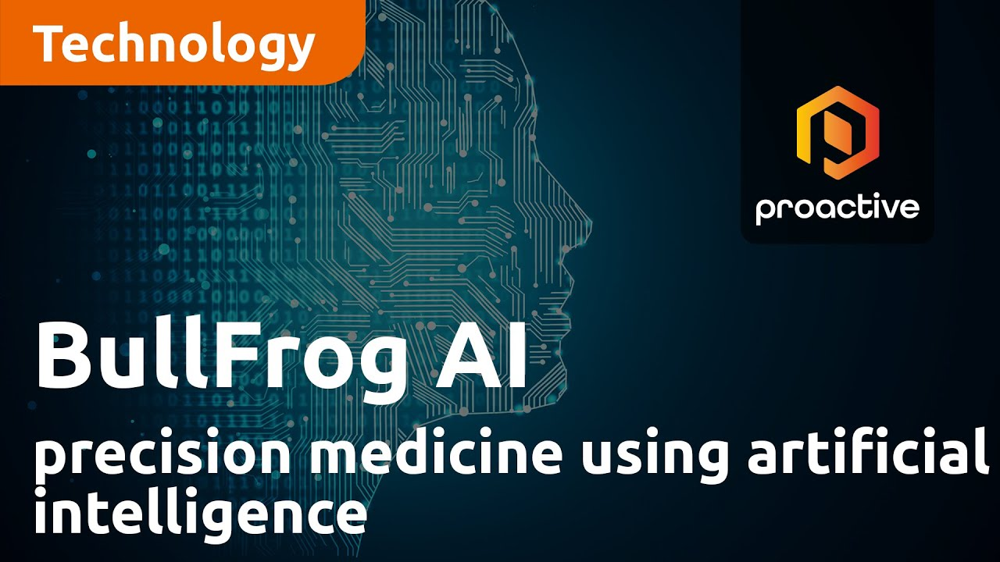

Date: October 20, 2023
On October 20, 2023, BullFrog AI Holdings, Inc. (NASDAQ: BFRG), a leader in applying artificial intelligence (AI) in the pharmaceutical industry, presented at the Benzinga All Access investor event. The event provided the company a platform to showcase how it’s leveraging AI to reshape drug discovery and development, offering potential for faster, more cost-effective therapeutic solutions.
BullFrog AI is focused on harnessing the power of AI to enhance drug development. By using advanced algorithms to process and analyze biological data, the company seeks to streamline the identification of promising drug candidates, reducing the time and financial burden typically associated with the preclinical phase of drug discovery.
BullFrog AI’s participation in this event reflects its commitment to staying at the cutting edge of AI technology in pharma. Investors looking to capitalize on the growth of AI in healthcare should keep an eye on the company as it continues to form strategic partnerships and innovate in the AI space. The potential for AI-driven drug discovery to disrupt the traditional pharmaceutical process presents a compelling investment opportunity.
BullFrog AI’s October 20 presentation underscores its position as a key player in transforming the pharmaceutical industry through AI. The company’s innovative solutions in drug development, combined with strategic industry partnerships, highlight a promising future in a rapidly evolving market. For those in the healthcare and AI sectors, BullFrog AI offers a potential avenue for growth and investment.